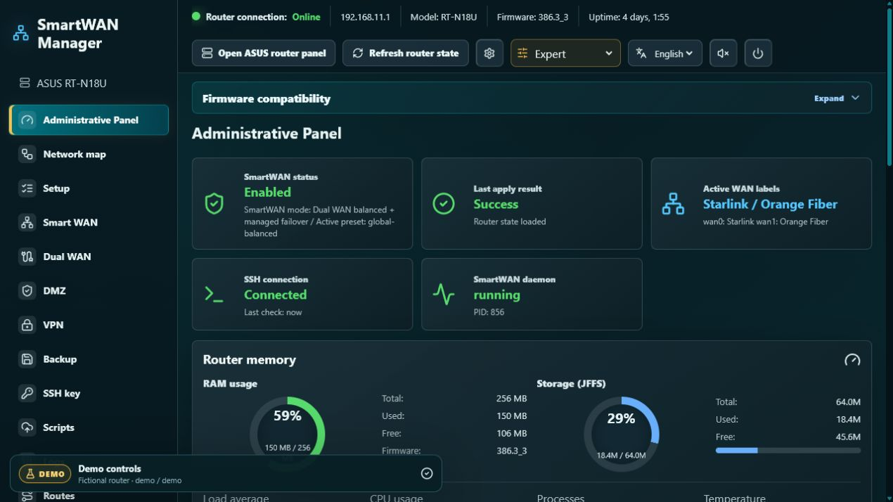
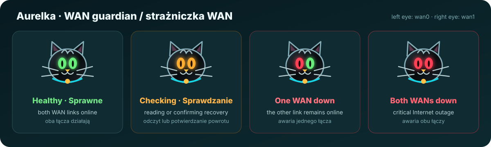

SmartWAN
Presets, domain/CIDR/source rules, 1-second default watchdog, 2 failures to switch, and 3 successes to return.
Local Docker panel for SmartWAN, ASUS Dual WAN, VPN, DMZ, failover monitoring, diagnostics, backups, and router automation over SSH.

Interactive demo · open panel →Explore the original Raspberry Pi panel interface without connecting to a router. The demo is built from the same panel component, network map, Aurelka mascot, styles, and animations. It starts in Expert mode and uses fictional ASUS RT-N18U, Starlink, Orange Fiber, VPN, device, routing, backup, and log data.
demodemoEverything runs locally in the browser. Demo controls never contact your router or save real credentials.
This panel was created for ASUS RT-N18U running version 386.3_3 of the unofficial
gzenux Asuswrt-Merlin RT-N18U firmware line.
The firmware must be installed and prepared before SmartWAN Manager is connected. Most applied settings continue to operate on the router after the panel is
stopped: SmartWAN rules and presets, router-side watchdog and failover, managed VPN/DMZ policy, and Merlin hooks.
Keep the container running for WAN country/location checks, Cloudflare DDNS, Tailscale access, persistent WAN-event archiving, the public status/network map, and Aurelka notifications.
Presets, domain/CIDR/source rules, 1-second default watchdog, 2 failures to switch, and 3 successes to return.
Port roles, load balance or failover, ratios, service groups, validation, and conflict previews.
OpenVPN Server 1/2 policy and profiles, Tailscale subnet routing, and Cloudflare DDNS.
Ed25519 keys generated in the panel or with SSH Key Forge, host fingerprint checks, automatic backups, restore preview, and managed Merlin hook blocks.
Router resources, WAN health, Internet probes, persistent events, logs, and route visualization.
Read-only trusted-LAN preview, active devices, per-device routes, WAN state, and VPN downloads.
WAN-aware inbound and return routing with follow-failover or preferred-WAN-only behavior.
Model/firmware detection, change preview, safety backup, confirmation, script installation, and apply.
Manage SmartWAN Manager and other Docker hosts locally or remotely with hattimon/DCC.
SmartWAN Manager extends the supported Asuswrt-Merlin RT-N18U firmware; it does not flash or upgrade firmware. The underlying project brings Asuswrt-Merlin features to the ASUS RT-N18U, based on the official RT-N18U GPL codebase. Starting with 384.9, its version numbers do not map directly to official Asuswrt-Merlin releases.
An unmodified copy is preserved in the hattimon fork so the SmartWAN-supported firmware remains available if the upstream file is moved or removed.
SHA-256 · F6C6DC222B0EC089AC913B3BF75108947B06A91462CA336424EB28BA028A318A
3.0.0.4.382.52288.Firmware installation is performed at the router owner's risk and may affect the warranty. SmartWAN Manager only manages scripts and settings after the firmware preparation is complete; it does not replace the firmware image or bootloader.

Each eye represents one WAN. Green means healthy; orange means checking, stale or missing data, or recovery confirmation; red means that WAN is down. Aurelka identifies the failed link, changes her expression and bulb, and—when sound is enabled—meows twice and repeats every 30 seconds during an outage. New local messages and WAN state changes also pulse the notification bulb.
There is no factory password. The owner creates it from the Docker host. The page provides username/password authentication, a signed 12-hour HttpOnly session, language selection, Aurelka controls, password-reset instructions, expandable connection status, and a trusted-network read-only map preview.
docker compose exec smartwan-manager node server/setPanelPassword.js admin 'replace-with-a-strong-password'Complete the router firmware preparation before installing the Docker panel. The following commands install SmartWAN Manager only; they do not install firmware on the router.
Recommended: 64-bit Linux, 2 GB RAM, 2 GB free storage, Docker Engine with Compose v2, Git, wired LAN, and SSH reachability to the router. A Pi 3B+ with 1 GB and swap is a practical minimum; Pi 4/5 with 2 GB+ is preferred.
git clone https://github.com/hattimon/SmartWAN-Manager.git
cd SmartWAN-Manager
cp .env.example .env
docker compose up -d --build
docker compose exec smartwan-manager node server/setPanelPassword.js admin 'replace-with-a-strong-password'Open http://<host-address>:8888. In WSL 2, open http://localhost:8888.
Optional Tailscale networking on Linux with /dev/net/tun:
docker compose -f docker-compose.yml -f docker-compose.tailscale.yml up -d --buildSee the complete installation, feature, security, and operation guide in the repository README.
Lokalny panel Docker do obsługi SmartWAN, ASUS Dual WAN, VPN, DMZ, monitoringu failover, diagnostyki, kopii zapasowych i automatyzacji routera przez SSH.
Przejrzyj oryginalny interfejs panelu z Raspberry Pi bez łączenia z routerem. Demo korzysta z tego samego komponentu panelu, mapy sieci, Aurelki, stylów i animacji. Uruchamia się w trybie Ekspert i zawiera wyłącznie fikcyjne dane ASUS RT-N18U, Starlink, Orange Fiber, VPN, urządzeń, routingu, backupów i logów.
demodemoCałość działa lokalnie w przeglądarce. Przyciski demo nie łączą się z routerem i nie zapisują prawdziwych danych dostępowych.
Ten panel został stworzony dla ASUS RT-N18U z wersją 386.3_3 nieoficjalnej linii firmware
gzenux Asuswrt-Merlin RT-N18U.
Firmware musi zostać zainstalowany i przygotowany przed połączeniem SmartWAN Managera. Większość zastosowanych ustawień działa na routerze również po zatrzymaniu panelu:
reguły i presety SmartWAN, routerowy watchdog i failover, zarządzana polityka VPN/DMZ oraz hooki Merlin.
Kontener powinien pozostać uruchomiony dla sprawdzania kraju/lokalizacji WAN, Cloudflare DDNS, dostępu Tailscale, trwałej archiwizacji zdarzeń WAN, publicznego statusu/mapy sieci oraz powiadomień Aurelki.
Presety, reguły domen/CIDR/źródeł, domyślny interwał 1 sekunda, 2 błędy do przełączenia i 3 sukcesy do powrotu.
Role portów, load balance lub failover, proporcje, grupy usług, walidacja i podgląd konfliktów.
Polityka i profile OpenVPN Server 1/2, routing podsieci Tailscale oraz Cloudflare DDNS.
Klucze Ed25519 generowane w panelu lub przez SSH Key Forge, kontrola fingerprintu hosta, automatyczne backupy, podgląd przywracania i zarządzane bloki hooków Merlin.
Zasoby routera, stan WAN, testy Internetu, trwałe zdarzenia, logi i wizualizacja tras.
Podgląd tylko do odczytu dla zaufanego LAN-u, aktywne urządzenia, trasy urządzeń, stan WAN i pobieranie VPN.
Reguły wejściowe i trasy powrotne zależne od WAN-u, z podążaniem za failover lub tylko preferowanym WAN-em.
Wykrywanie modelu/firmware, podgląd zmian, backup bezpieczeństwa, potwierdzenie, instalacja skryptów i zastosowanie ustawień.
Zarządzaj SmartWAN Managerem oraz innymi hostami Docker lokalnie lub zdalnie przez hattimon/DCC.
SmartWAN Manager rozszerza obsługiwany firmware Asuswrt-Merlin RT-N18U; nie służy do wgrywania ani aktualizowania firmware. Projekt bazowy przenosi funkcje Asuswrt-Merlin na ASUS RT-N18U, wykorzystując oficjalny kod GPL tego modelu. Od wersji 384.9 numeracja projektu nie odpowiada bezpośrednio wydaniom oficjalnego Asuswrt-Merlin.
Niezmodyfikowana kopia jest zachowana w forku hattimon, aby firmware obsługiwany przez SmartWAN pozostał dostępny po przeniesieniu lub usunięciu pliku źródłowego.
SHA-256 · F6C6DC222B0EC089AC913B3BF75108947B06A91462CA336424EB28BA028A318A
3.0.0.4.382.52288.Instalacja firmware odbywa się na odpowiedzialność właściciela routera i może wpływać na gwarancję. SmartWAN Manager zarządza skryptami i ustawieniami dopiero po przygotowaniu firmware; nie zastępuje obrazu firmware ani bootloadera.
Każde oko odpowiada jednemu WAN-owi. Zielone oznacza sprawne łącze; pomarańczowe — sprawdzanie, nieaktualne lub brakujące dane albo potwierdzanie powrotu; czerwone — awarię danego WAN-u. Aurelka wskazuje uszkodzone łącze, zmienia wyraz i kolor żarówki, a przy włączonym dźwięku miauczy dwa razy i powtarza alarm co 30 sekund. Nowe lokalne wiadomości i zmiany stanu WAN również uruchamiają pulsowanie żarówki.
Panel nie ma fabrycznego hasła. Właściciel ustawia je na hoście Dockera. Strona udostępnia logowanie nazwą użytkownika i hasłem, podpisaną 12-godzinną sesję HttpOnly, wybór języka, sterowanie Aurelką, instrukcje resetu hasła, rozwijany stan połączenia oraz podgląd mapy sieci tylko do odczytu dla zaufanej sieci.
docker compose exec smartwan-manager node server/setPanelPassword.js admin 'wstaw-tu-mocne-haslo'Przed instalacją panelu Docker ukończ przygotowanie firmware routera. Poniższe polecenia instalują wyłącznie SmartWAN Manager; nie wgrywają firmware do routera.
Zalecane są: 64-bitowy Linux, 2 GB RAM, 2 GB wolnego miejsca, Docker Engine z Compose v2, Git, przewodowy LAN i dostęp SSH do routera. Praktycznym minimum jest Pi 3B+ z 1 GB RAM i swapem; preferowany jest Pi 4/5 z co najmniej 2 GB RAM.
git clone https://github.com/hattimon/SmartWAN-Manager.git
cd SmartWAN-Manager
cp .env.example .env
docker compose up -d --build
docker compose exec smartwan-manager node server/setPanelPassword.js admin 'wstaw-tu-mocne-haslo'Otwórz http://<adres-hosta>:8888. W WSL 2 otwórz http://localhost:8888.
Opcjonalna sieć Tailscale na Linuksie z /dev/net/tun:
docker compose -f docker-compose.yml -f docker-compose.tailscale.yml up -d --buildPełna instrukcja instalacji, opis funkcji, bezpieczeństwa i utrzymania znajduje się w polskiej części README.